Makeover an interactive plot from Merchandise Trade of Singapore
This is written as the requirements for the Visual Analytics module for MITB.
This is my second evaluation of Singapore’s Merchandize Trade over 2011 to 2020 and ten countries or regions. I have used the data from Merchandise Trade of Singapore.
1. The original data visualization

2. Critiques and suggestions
2.1 Clarity
| S/N | Critiques | Comments |
|---|---|---|
| 1 | Hard to find the relationship between import and export | List in the Tooltips to show net importers or exporters |
| 2 | Cannot see the trend during the period of 2011 to 2020 | Use interactive animation to see the trend |
| 3 | Cannot show the difference between import and export | Use Tooltips to show the balance of trade |
2.2 Aesthetics
| S/N | Critiques | Comments |
|---|---|---|
| 1 | Too many colors in one graph, which will confuse people | Change to consistent color |
| 2 | Some of circles hide each other | Use transparency to eliminate the overlap |
| 3 | The abbreviation will make people confused sometimes | Add map to be more intuitive |
3. Proposed Sketch
3.1 Sketch
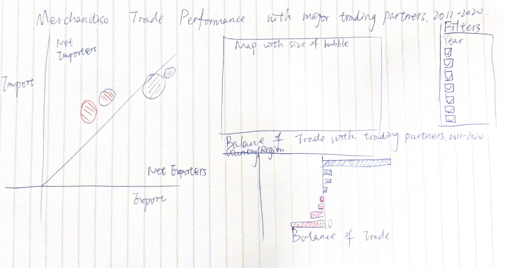
3.2 Things to achieve
In this makeover, I will give an interactive visualization by providing the filter of Year. I will illustrate how the trend is for each country or region in these 10 years. Also, I will use map to make each country more intuitive and better for people to know the location and relationship between each trade partner. I will also visualize the difference between exports and imports, which is the balance of trade in this case.
4. Data Preparation
4.1 convert text to number in excel
First, I open the Outputfile to read the data in excel, and find that all the numbers are in text format, so I change it into number.

After that, I filter the countries and year we need, and paste them into new sheet.
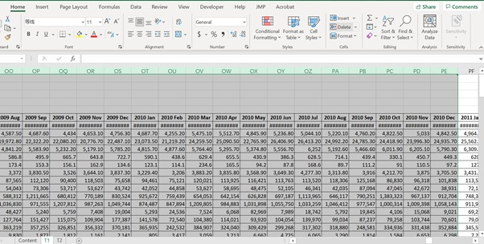 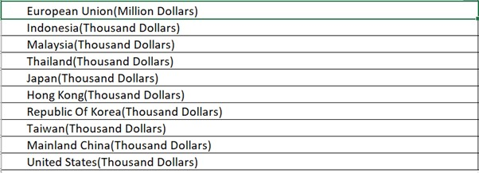
4.2 Data Transform using R
- read excel in to R
import <- readxl::read_xlsx("~/smu/Term3/Visual Analytics-ISSS608/DataViz Makeover 2/outputFile.xlsx",
sheet = "Import",range = "A1:DQ11",col_names = TRUE)
export <- readxl::read_xlsx("~/smu/Term3/Visual Analytics-ISSS608/DataViz Makeover 2/outputFile.xlsx",
sheet = "Export",range = "A1:DQ11",col_names = TRUE)
import
# A tibble: 10 x 121
Variables `2011 Jan` `2011 Feb` `2011 Mar` `2011 Apr` `2011 May`
<chr> <dbl> <dbl> <dbl> <dbl> <dbl>
1 European~ 3431. 3487. 4492. 4518. 4495.
2 Indonesi~ 2204746 1568744 2199579 2105377 2213511
3 Malaysia~ 3860565 3532773 4578128 4311710 3789599
4 Thailand~ 1061048 1036520 1148829 1262658 1143506
5 Japan(Th~ 2799029 2457833 3593755 2661627 2442665
6 Hong Kon~ 350017 226220 345864 430938 335412
7 Republic~ 2258272 1566609 2333908 2006193 2600826
8 Taiwan(T~ 2101001 2077207 2407856 2164329 2265637
9 Mainland~ 4040360 3102081 4598678 4096396 4116579
10 United S~ 3571568 3478796 4017213 4235146 4030906
# ... with 115 more variables: `2011 Jun` <dbl>, `2011 Jul` <dbl>,
# `2011 Aug` <dbl>, `2011 Sep` <dbl>, `2011 Oct` <dbl>, `2011
# Nov` <dbl>, `2011 Dec` <dbl>, `2012 Jan` <dbl>, `2012 Feb` <dbl>,
# `2012 Mar` <dbl>, `2012 Apr` <dbl>, `2012 May` <dbl>, `2012
# Jun` <dbl>, `2012 Jul` <dbl>, `2012 Aug` <dbl>, `2012 Sep` <dbl>,
# `2012 Oct` <dbl>, `2012 Nov` <dbl>, `2012 Dec` <dbl>, `2013
# Jan` <dbl>, `2013 Feb` <dbl>, `2013 Mar` <dbl>, `2013 Apr` <dbl>,
# `2013 May` <dbl>, `2013 Jun` <dbl>, `2013 Jul` <dbl>, `2013
# Aug` <dbl>, `2013 Sep` <dbl>, `2013 Oct` <dbl>, `2013 Nov` <dbl>,
# `2013 Dec` <dbl>, `2014 Jan` <dbl>, `2014 Feb` <dbl>, `2014
# Mar` <dbl>, `2014 Apr` <dbl>, `2014 May` <dbl>, `2014 Jun` <dbl>,
# `2014 Jul` <dbl>, `2014 Aug` <dbl>, `2014 Sep` <dbl>, `2014
# Oct` <dbl>, `2014 Nov` <dbl>, `2014 Dec` <dbl>, `2015 Jan` <dbl>,
# `2015 Feb` <dbl>, `2015 Mar` <dbl>, `2015 Apr` <dbl>, `2015
# May` <dbl>, `2015 Jun` <dbl>, `2015 Jul` <dbl>, `2015 Aug` <dbl>,
# `2015 Sep` <dbl>, `2015 Oct` <dbl>, `2015 Nov` <dbl>, `2015
# Dec` <dbl>, `2016 Jan` <dbl>, `2016 Feb` <dbl>, `2016 Mar` <dbl>,
# `2016 Apr` <dbl>, `2016 May` <dbl>, `2016 Jun` <dbl>, `2016
# Jul` <dbl>, `2016 Aug` <dbl>, `2016 Sep` <dbl>, `2016 Oct` <dbl>,
# `2016 Nov` <dbl>, `2016 Dec` <dbl>, `2017 Jan` <dbl>, `2017
# Feb` <dbl>, `2017 Mar` <dbl>, `2017 Apr` <dbl>, `2017 May` <dbl>,
# `2017 Jun` <dbl>, `2017 Jul` <dbl>, `2017 Aug` <dbl>, `2017
# Sep` <dbl>, `2017 Oct` <dbl>, `2017 Nov` <dbl>, `2017 Dec` <dbl>,
# `2018 Jan` <dbl>, `2018 Feb` <dbl>, `2018 Mar` <dbl>, `2018
# Apr` <dbl>, `2018 May` <dbl>, `2018 Jun` <dbl>, `2018 Jul` <dbl>,
# `2018 Aug` <dbl>, `2018 Sep` <dbl>, `2018 Oct` <dbl>, `2018
# Nov` <dbl>, `2018 Dec` <dbl>, `2019 Jan` <dbl>, `2019 Feb` <dbl>,
# `2019 Mar` <dbl>, `2019 Apr` <dbl>, `2019 May` <dbl>, `2019
# Jun` <dbl>, `2019 Jul` <dbl>, `2019 Aug` <dbl>, `2019 Sep` <dbl>,
# ...export
# A tibble: 10 x 121
Variables `2011 Jan` `2011 Feb` `2011 Mar` `2011 Apr` `2011 May`
<chr> <dbl> <dbl> <dbl> <dbl> <dbl>
1 European~ 3277. 3340. 3499. 3251. 3152.
2 Indonesi~ 4782580 3832103 4820233 4255394 4555603
3 Malaysia~ 4975537 4068292 5424046 5107121 5281074
4 Thailand~ 1667137 1306528 1636746 1459544 1501285
5 Japan(Th~ 1768806 1547430 1863655 1846185 1930247
6 Hong Kon~ 4992582 4154751 4819844 4685416 4623709
7 Republic~ 1811636 1465274 1697303 1514177 1557176
8 Taiwan(T~ 1569670 1230843 1772343 1564654 1772983
9 Mainland~ 4734758 3514313 4490891 4113327 4393900
10 United S~ 2535816 2041501 2402653 2692001 2395597
# ... with 115 more variables: `2011 Jun` <dbl>, `2011 Jul` <dbl>,
# `2011 Aug` <dbl>, `2011 Sep` <dbl>, `2011 Oct` <dbl>, `2011
# Nov` <dbl>, `2011 Dec` <dbl>, `2012 Jan` <dbl>, `2012 Feb` <dbl>,
# `2012 Mar` <dbl>, `2012 Apr` <dbl>, `2012 May` <dbl>, `2012
# Jun` <dbl>, `2012 Jul` <dbl>, `2012 Aug` <dbl>, `2012 Sep` <dbl>,
# `2012 Oct` <dbl>, `2012 Nov` <dbl>, `2012 Dec` <dbl>, `2013
# Jan` <dbl>, `2013 Feb` <dbl>, `2013 Mar` <dbl>, `2013 Apr` <dbl>,
# `2013 May` <dbl>, `2013 Jun` <dbl>, `2013 Jul` <dbl>, `2013
# Aug` <dbl>, `2013 Sep` <dbl>, `2013 Oct` <dbl>, `2013 Nov` <dbl>,
# `2013 Dec` <dbl>, `2014 Jan` <dbl>, `2014 Feb` <dbl>, `2014
# Mar` <dbl>, `2014 Apr` <dbl>, `2014 May` <dbl>, `2014 Jun` <dbl>,
# `2014 Jul` <dbl>, `2014 Aug` <dbl>, `2014 Sep` <dbl>, `2014
# Oct` <dbl>, `2014 Nov` <dbl>, `2014 Dec` <dbl>, `2015 Jan` <dbl>,
# `2015 Feb` <dbl>, `2015 Mar` <dbl>, `2015 Apr` <dbl>, `2015
# May` <dbl>, `2015 Jun` <dbl>, `2015 Jul` <dbl>, `2015 Aug` <dbl>,
# `2015 Sep` <dbl>, `2015 Oct` <dbl>, `2015 Nov` <dbl>, `2015
# Dec` <dbl>, `2016 Jan` <dbl>, `2016 Feb` <dbl>, `2016 Mar` <dbl>,
# `2016 Apr` <dbl>, `2016 May` <dbl>, `2016 Jun` <dbl>, `2016
# Jul` <dbl>, `2016 Aug` <dbl>, `2016 Sep` <dbl>, `2016 Oct` <dbl>,
# `2016 Nov` <dbl>, `2016 Dec` <dbl>, `2017 Jan` <dbl>, `2017
# Feb` <dbl>, `2017 Mar` <dbl>, `2017 Apr` <dbl>, `2017 May` <dbl>,
# `2017 Jun` <dbl>, `2017 Jul` <dbl>, `2017 Aug` <dbl>, `2017
# Sep` <dbl>, `2017 Oct` <dbl>, `2017 Nov` <dbl>, `2017 Dec` <dbl>,
# `2018 Jan` <dbl>, `2018 Feb` <dbl>, `2018 Mar` <dbl>, `2018
# Apr` <dbl>, `2018 May` <dbl>, `2018 Jun` <dbl>, `2018 Jul` <dbl>,
# `2018 Aug` <dbl>, `2018 Sep` <dbl>, `2018 Oct` <dbl>, `2018
# Nov` <dbl>, `2018 Dec` <dbl>, `2019 Jan` <dbl>, `2019 Feb` <dbl>,
# `2019 Mar` <dbl>, `2019 Apr` <dbl>, `2019 May` <dbl>, `2019
# Jun` <dbl>, `2019 Jul` <dbl>, `2019 Aug` <dbl>, `2019 Sep` <dbl>,
# ...- eliminate Long words
For better visualization, I delete the unit followed by countries, and change to Import and Export to better distinguish in the plot.
- swtich rows and columns
import_df <-
import %>%
pivot_longer(-Variables,names_to = 'Time', values_to = 'imports') %>%
pivot_wider(names_from = Variables, values_from = imports)
import_df
# A tibble: 120 x 11
Time `European Union~ `Indonesia(Impo~ `Malaysia(Impor~
<chr> <dbl> <dbl> <dbl>
1 2011~ 3431. 2204746 3860565
2 2011~ 3487. 1568744 3532773
3 2011~ 4492. 2199579 4578128
4 2011~ 4518. 2105377 4311710
5 2011~ 4495. 2213511 3789599
6 2011~ 4315 1947457 4284834
7 2011~ 3414. 2113417 4235909
8 2011~ 4343. 2189242 4317987
9 2011~ 5125. 2036928 3921655
10 2011~ 4294. 2016277 4297615
# ... with 110 more rows, and 7 more variables:
# `Thailand(Import)` <dbl>, `Japan(Import)` <dbl>, `Hong
# Kong(Import)` <dbl>, `Republic Of Korea(Import)` <dbl>,
# `Taiwan(Import)` <dbl>, `Mainland China(Import)` <dbl>, `United
# States(Import)` <dbl>export_df <-
export %>%
pivot_longer(-Variables,names_to = 'Time', values_to = 'exports') %>%
pivot_wider(names_from = Variables, values_from = exports)
export_df
# A tibble: 120 x 11
Time `European Union~ `Indonesia(Expo~ `Malaysia(Expor~
<chr> <dbl> <dbl> <dbl>
1 2011~ 3277. 4782580 4975537
2 2011~ 3340. 3832103 4068292
3 2011~ 3499. 4820233 5424046
4 2011~ 3251. 4255394 5107121
5 2011~ 3152. 4555603 5281074
6 2011~ 3471. 4884538 5643456
7 2011~ 3333. 4903149 5436669
8 2011~ 3282 4815474 5720496
9 2011~ 3566. 5460155 5531211
10 2011~ 3023. 5475134 5278617
# ... with 110 more rows, and 7 more variables:
# `Thailand(Export)` <dbl>, `Japan(Export)` <dbl>, `Hong
# Kong(Export)` <dbl>, `Republic Of Korea(Export)` <dbl>,
# `Taiwan(Export)` <dbl>, `Mainland China(Export)` <dbl>, `United
# States(Export)` <dbl>- change values into same unit
Since the unit of each country or region is different, I use dollars as unit and time thousand dollars or million dollars into the values.
import_df[2] <- import_df[2]*1000000
export_df[2] <- export_df[2]*1000000
for (i in 3:11){
import_df[i] <- import_df[i]*1000
export_df[i] <- export_df[i]*1000
}
import_df
# A tibble: 120 x 11
Time `European Union~ `Indonesia(Impo~ `Malaysia(Impor~
<chr> <dbl> <dbl> <dbl>
1 2011~ 3431300000 2204746000 3860565000
2 2011~ 3486600000 1568744000 3532773000
3 2011~ 4492400000 2199579000 4578128000
4 2011~ 4518100000 2105377000 4311710000
5 2011~ 4494700000 2213511000 3789599000
6 2011~ 4315000000 1947457000 4284834000
7 2011~ 3413900000 2113417000 4235909000
8 2011~ 4342800000 2189242000 4317987000
9 2011~ 5124900000 2036928000 3921655000
10 2011~ 4293700000 2016277000 4297615000
# ... with 110 more rows, and 7 more variables:
# `Thailand(Import)` <dbl>, `Japan(Import)` <dbl>, `Hong
# Kong(Import)` <dbl>, `Republic Of Korea(Import)` <dbl>,
# `Taiwan(Import)` <dbl>, `Mainland China(Import)` <dbl>, `United
# States(Import)` <dbl>export_df
# A tibble: 120 x 11
Time `European Union~ `Indonesia(Expo~ `Malaysia(Expor~
<chr> <dbl> <dbl> <dbl>
1 2011~ 3277100000 4782580000 4975537000
2 2011~ 3340500000 3832103000 4068292000
3 2011~ 3498900000 4820233000 5424046000
4 2011~ 3251100000 4255394000 5107121000
5 2011~ 3151500000 4555603000 5281074000
6 2011~ 3471300000 4884538000 5643456000
7 2011~ 3333300000 4903149000 5436669000
8 2011~ 3282000000 4815474000 5720496000
9 2011~ 3565800000 5460155000 5531211000
10 2011~ 3022700000 5475134000 5278617000
# ... with 110 more rows, and 7 more variables:
# `Thailand(Export)` <dbl>, `Japan(Export)` <dbl>, `Hong
# Kong(Export)` <dbl>, `Republic Of Korea(Export)` <dbl>,
# `Taiwan(Export)` <dbl>, `Mainland China(Export)` <dbl>, `United
# States(Export)` <dbl>- write the new data frame into csv
4.3 Tableau Data Prep
I want to get the filter from country and time, I need extract country from the import and export. Therefore, I import the result csv from R to Tableau Data Prep.
First, I import ‘import.csv’ and ‘export.csv’ to Tableau Data Prep.
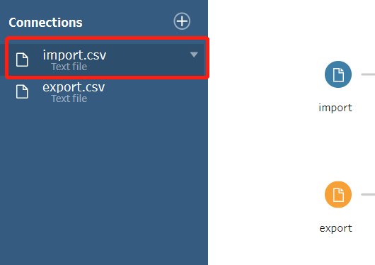
After that, I add a pivot table to these two datasets.
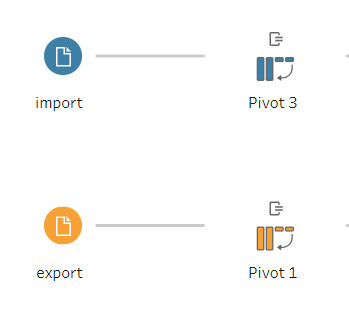
Add all the import columns in it.
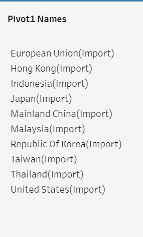
Then, I split the pivot names into 2 parts and rename the first one as Country.
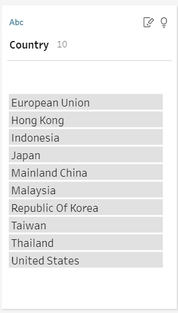
After finishing all the steps, I join this two sheets together and save the output as ‘Data.csv’.
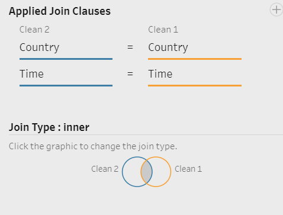 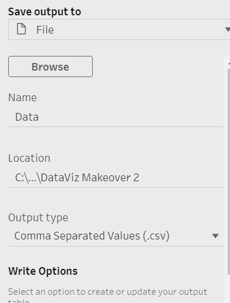 # 5. Step of Process
5.1 Making bubble plot
- drag the Data from Tableau Data Prep into the area.
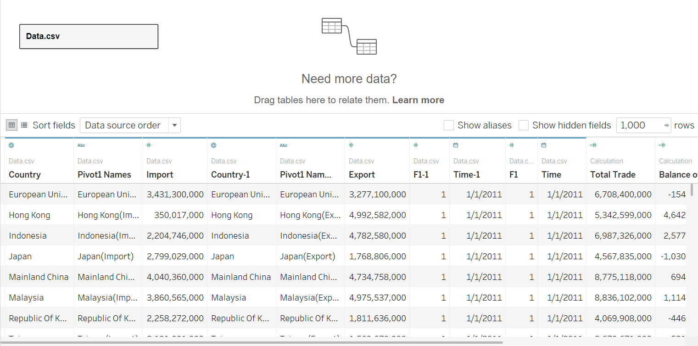 * 2. Drag Export to Column and Import to Row.
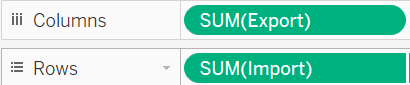
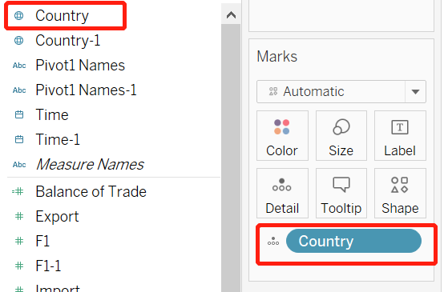
The output looks like this.
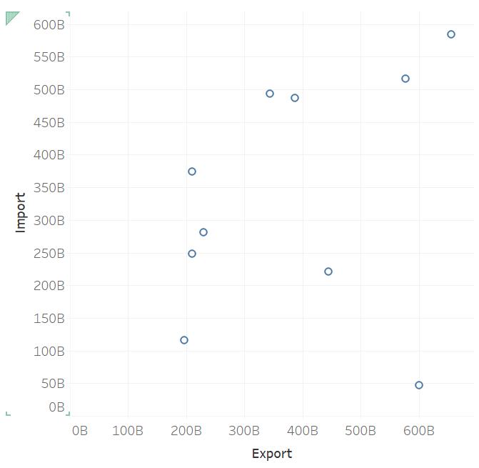
- Calculate fields
First, we calculate balance of trade with export-import.
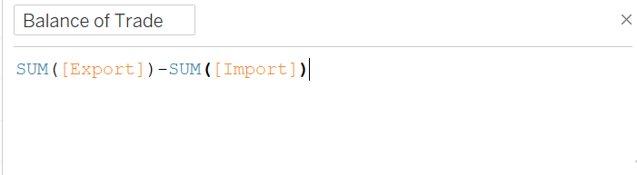
Then, we calculate Total trade with sum of import and export.
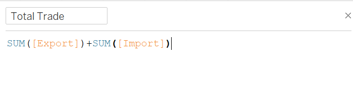
Then, we calculate Statement.If balance of trade is larger than 0, it is Net Exporters. Otherwise, it is Net Importers.
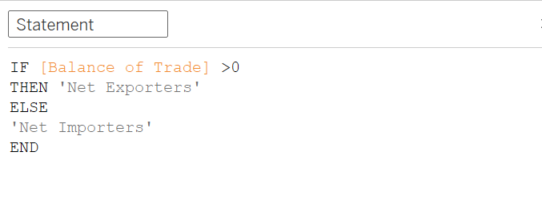
When I get balance of trade, I put it in the color pane.
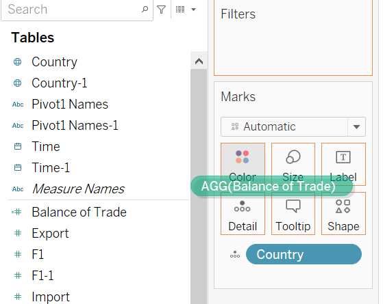
The plot looks like this now.
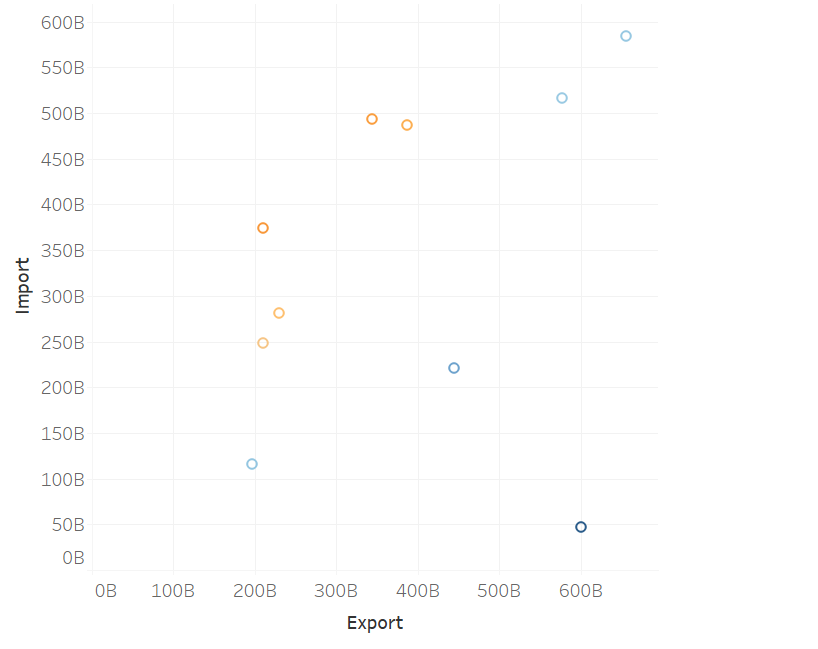
And then we drag Total_trade to size.
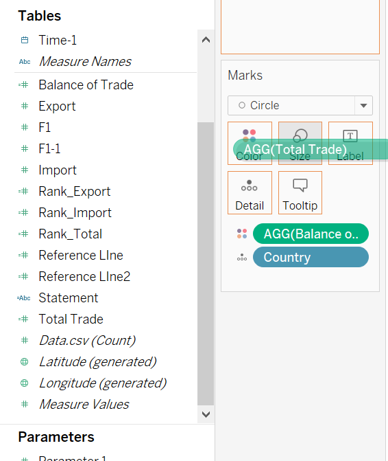
- edit color and add reference lines
Choose the color bar and edit colors
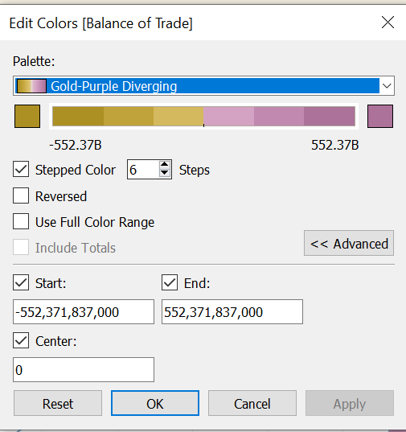
Then, we create a reference line calculation field to better separate the area of Net Exporters and Net Importers.
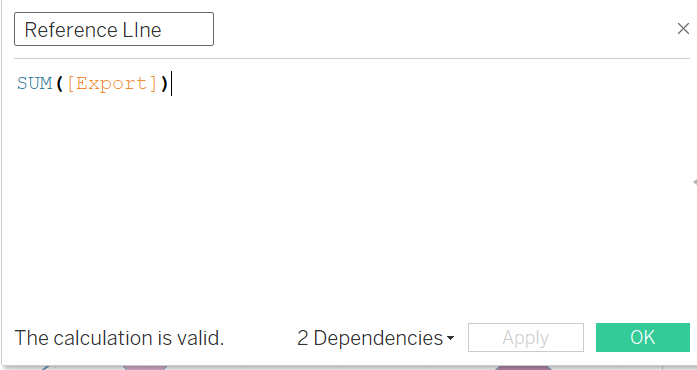
We drag the reference line to form a synchronize y axis, and change the plot type to line plot.
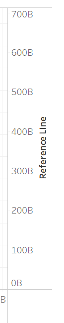
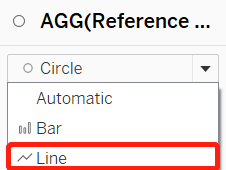
Then, we let the two y axis to be synchronized.
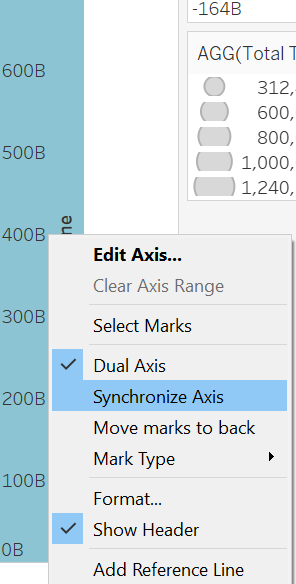
After that, we add the trend line in the Reference line tab.
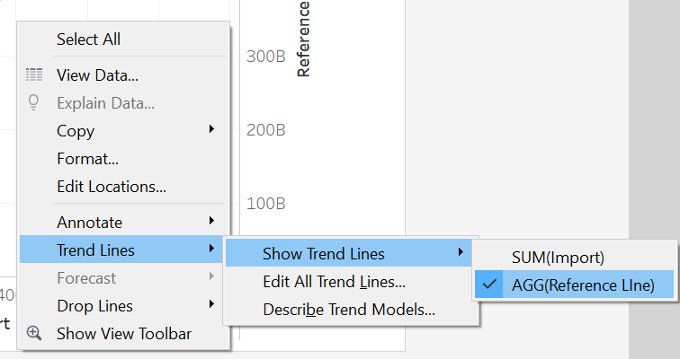
After that, we hide the Reference Line axis and only use Import as y axis.
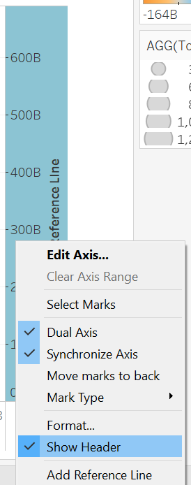
Finally, after editing the title and annotate to the areas, we get the final plot.
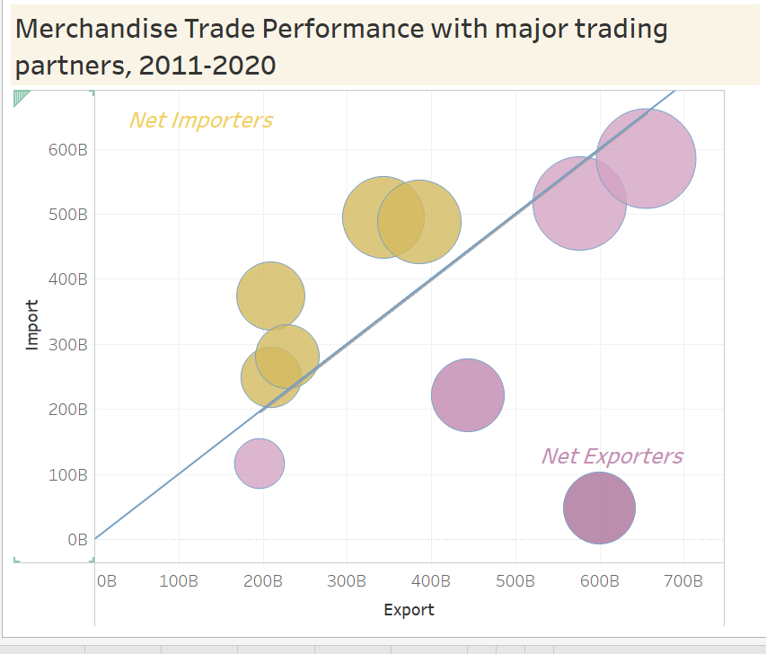
5.2 Making Balance of Trade chart
- First, we drag Country to Columns and Balance of Trade to Rows.
- Then, drag Balance of Trade into color pane.
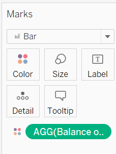
- Edit color and sort the sequence by field.
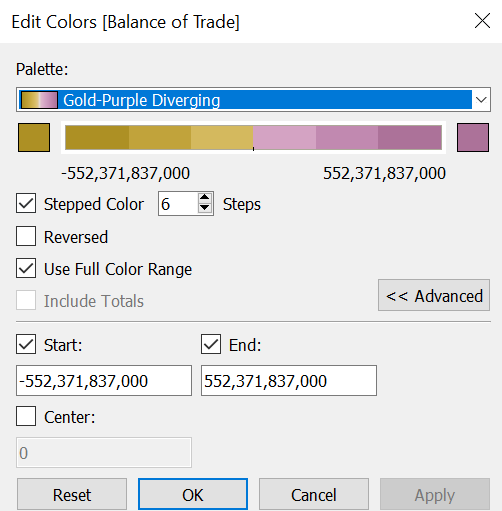
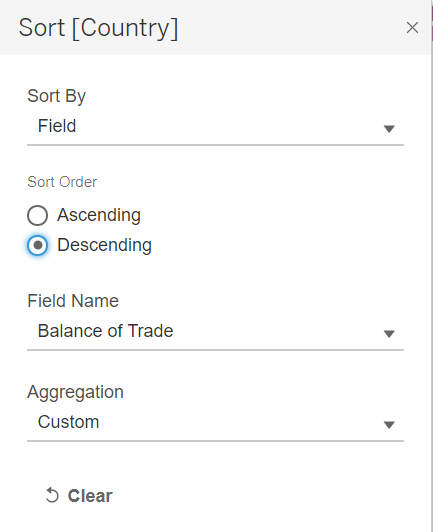
- Finally, we get the final plot.
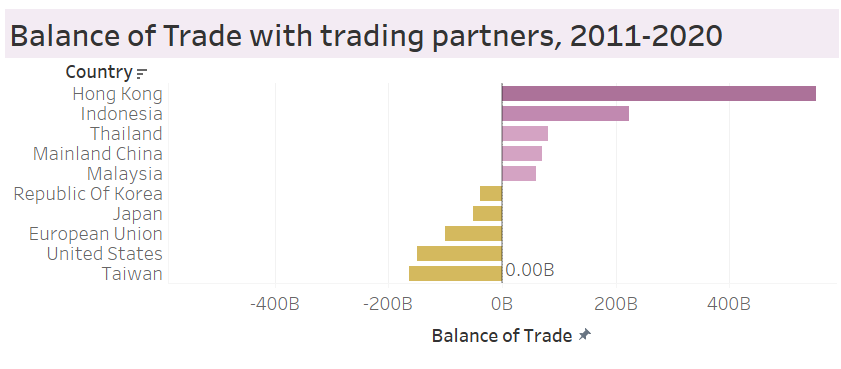
5.3 Create Map plot
- Change country geographic role to Country/Region.
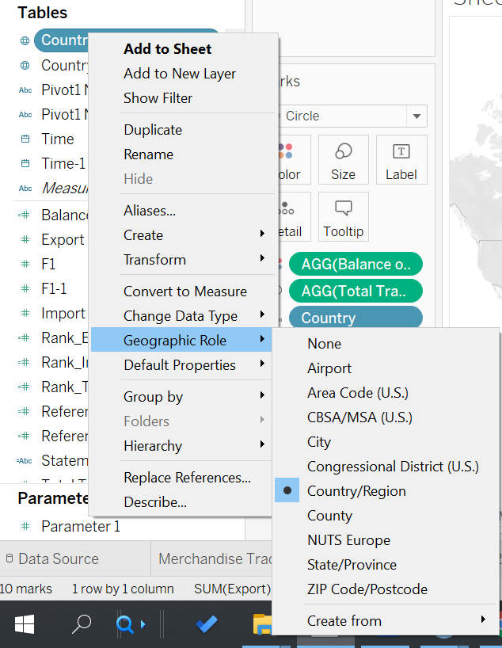
- Drag Export, Import and Country into details. Moreover, drag Total Trade into size.
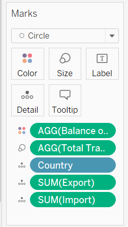
- Edit color and get the final plot.
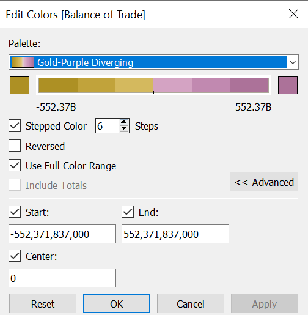
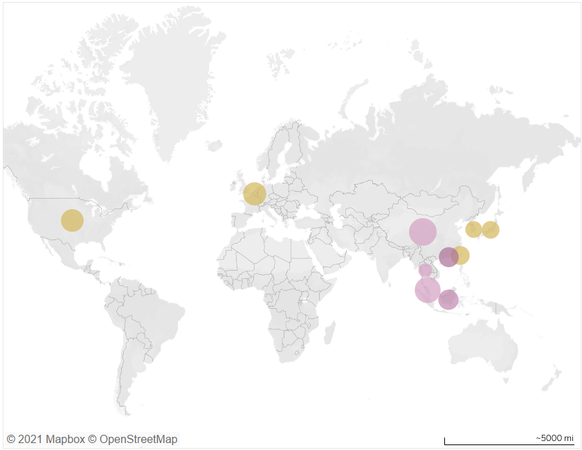
6. Final Visualization
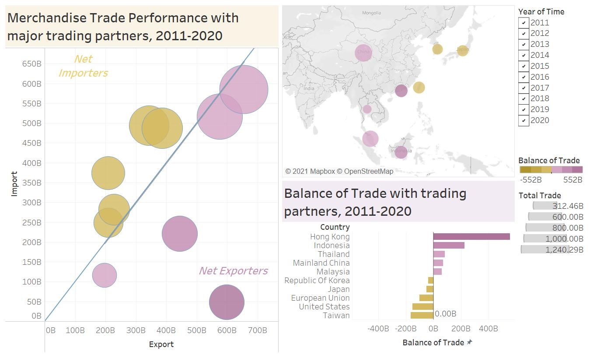
Data Source:Merchandise Trade of Singapore
Full visualization available at Peirong Lin - Tableau Public
7. Main observations
- HongKong is the Top Net Exporters in these 10 years.
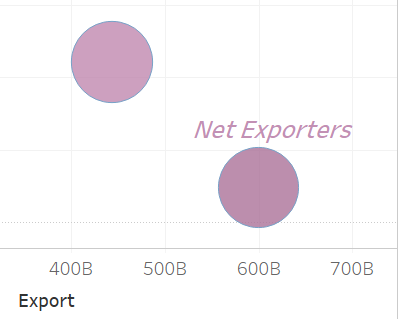
- From the map, we can see that most of the trade partners located in Asia.
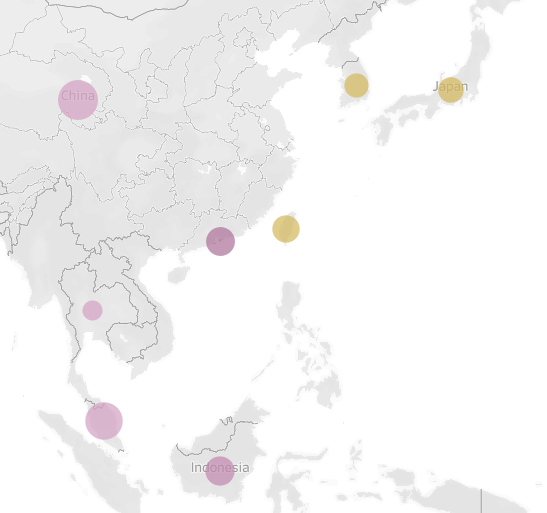
- The Top 1 Total Trade Partner in China recently. Malaysia also has large scale of trading volume.